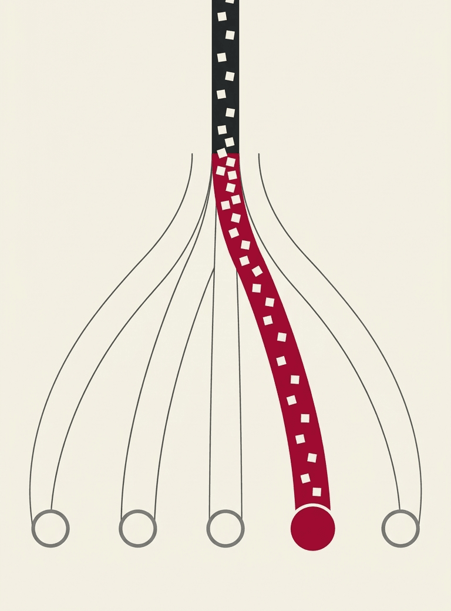
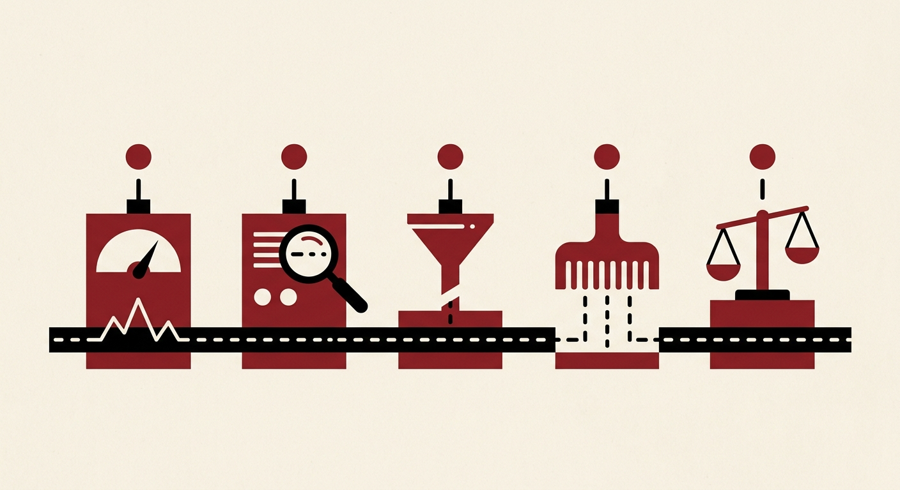
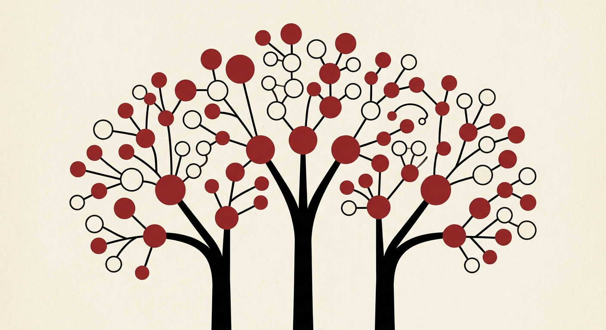

ornotto · a book and a Python package
Ask a local model to pick an answer, not to write one¶
Send a message and a closed list of answers. The model returns one of them and a probability for every alternative, with no generated text to parse, repair or retry.

How a decision works¶
-
A state¶
A message, a ticket or a slice of application data. The model reads it once.
-
A question and its answers¶
A named question with a closed set of answers, such as
docs,pythonorfea. -
A probability for each answer¶
The highest one is the choice. The others show how close the alternatives came.
Would you say a linear classifier hallucinates?
Almeida asked this on jev's launch thread, when the discussion turned to whether a model that writes no text can hallucinate. None of the readouts in this book can return an answer outside your list. Each of them can still put a high probability on the wrong one, which is what chapter 9 measures.
What we measured¶
One router question, asked of every method: which of five tasks does a FontLab user want? The best eight agree to within one query of 67. Their speed per query runs from 88 ms to 962 ms. Explore the speed/accuracy frontier, or read all 291 rows and every table are on the results page.
For a fast first pass, laya on MLX scores 52/67 in 6.9 ms on translated text. Set your own accuracy floor and compare Pareto frontiers. Rune Q4 now measures 124.8 ms on GPU, against 487.1 ms with CPU weights. C = CPU, G = GPU, C+G = mixed, R = remote; all other device codes are explained in the full report.
Show the full top 15
Each row is one method, ranked by translated score, then direct score, then speed. Click a column header to sort.
| Engine | C/G | Model | Family | Quant | GB | ms/query | Translated | Direct |
|---|---|---|---|---|---|---|---|---|
| jev (hosted) | R | jev | dedicated | 466.1 | 65/67 | 65/67 | ||
| pcdServer | C+G | rune-mradermacher-26b-a4b | dedicated | q5 | 19.13 | 962.3 | 65/67 | 65/67 |
| slot (llama-server) | G | rune-26b-a4b | dedicated | q3 | 13.52 | 366.6 | 65/67 | 57/67 |
| pcdServer | G | qwen3.5-4b-hmm | fine-tuned | q8 | 4.48 | 87.6 | 64/67 | 65/67 |
| pcdServer | G | qwen3.5-4b-hmm | fine-tuned | q4 | 2.71 | 92.6 | 64/67 | 65/67 |
| pcdServer | G | qwen3.5-4b-hmm | fine-tuned | bf16 | 8.42 | 94.8 | 64/67 | 65/67 |
| ollaya | G | winnow-12b | dedicated | q8_0 | 12.67 | 891.1 | 64/67 | 65/67 |
| pcdServer | G | rune-mradermacher-26b-a4b | dedicated | q3 | 13.29 | 146.1 | 64/67 | 64/67 |
| dohnuts (Metal) | G | decider-35b-a3b | dedicated | q4 | 21.17 | 266.3 | 64/67 | 64/67 |
| System One server | G | neohorse-4b | dedicated | q8 | 5.17 | 273.1 | 64/67 | 64/67 |
| slot (llama-server) | G | decider-35b-a3b | dedicated | q4 | 21.17 | 299.1 | 64/67 | 64/67 |
| dohnuts (Metal) | G | jpt-4b | dedicated | q8 | 4.48 | 335.6 | 64/67 | 64/67 |
| pcdServer | C | rune-mradermacher-26b-a4b | dedicated | q8 | 26.86 | 758.1 | 64/67 | 64/67 |
| llama.cpp embeddings + head | C+G | jev-omni | dedicated | q3 | 6.09 | 1,222.3 | 64/67 | 64/67 |
| slot (llama-server) | G | rune-26b-a4b | dedicated | q4 | 17.03 | 335.3 | 64/67 | 55/67 |
Three engines, one API¶
The package runs two open-source C++ engines on llama.cpp behind one Python API, and drives a third if you install it. Chapter 3 explains how each one reads an answer.
dohnuts¶
Runs models trained for this job and reads their answer at the slot they were trained to fill. decider-0.8b scores 62/67 in about 51 ms.

pcdServer¶
Runs any chat GGUF and scores only the tokens of the answers you allow. Qwen3.5-4B-Hmm scores 65/67 on the original text in 88 ms.
ollaya¶
A separate binary with its own model registry; ornotto drives it when it is installed. Ten of its models were measured, and winnow-12b scores 65/67 on the original text.

The book in twelve chapters¶
Concepts
- Deciding, not generating A model that points at one of the answers you gave it.
- The shape of a decision The request and the answer in System One terms, and what changes on pcdServer.
- Ways to read an answer Each readout takes its answer from a different place in the model.
- Dedicated, fine-tuned and vanilla models Three families, sorted by where the answer is read.
Benchmarks
- How we measured One router question, 67 queries, labels fixed before the run.
- Results All 291 methods against jev, the hosted reference.
- Quantization and size What precision changes: file size, memory and the answers that survive.
- Speed, memory and caching One forward pass per decision, and what an engine avoids prefilling twice.
- Confidence and fallback Whether the probabilities mean what they say, and what a fallback buys.
The package
- The ornotto package What each object takes, and how the engines start and stop.
- Typed decisions and pydantic-ai A
Literal, aboolor a pydantic model as the question. - Choosing, building and contributing Which engine and model for which job, and how to send a change upstream.
Try it in two lines¶
uv add ornotto
python -c 'import ornotto; print(ornotto.choose("Build a kern feature for A V W T", ["docs", "python", "fea"]).value)' # fea
The first call downloads decider-0.8b (0.81 GB) from Hugging Face and starts dohnuts on a loopback port. Later calls reuse both. For a yes/no question with its probability, use check:
answer = ornotto.check("Write me a script that renames glyphs", "Does the user want code?")
answer.value, answer.probability # (True, 0.6)
Chapter 10 covers the rest of the API, and uv add "ornotto[pydantic-ai]" adds the pydantic-ai integration.